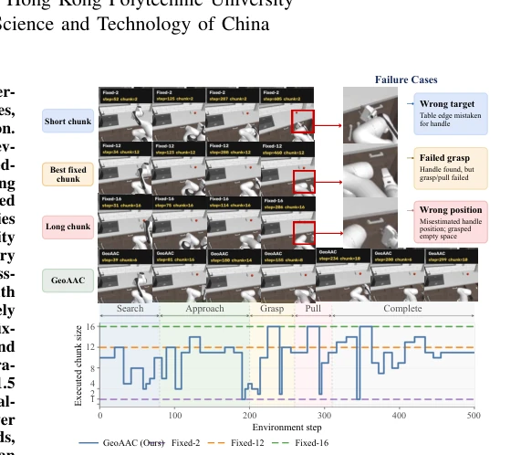
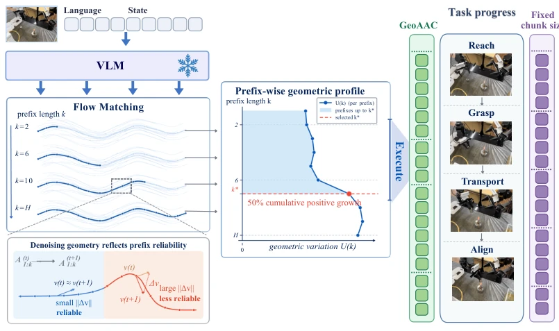
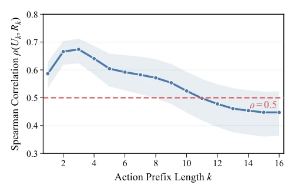
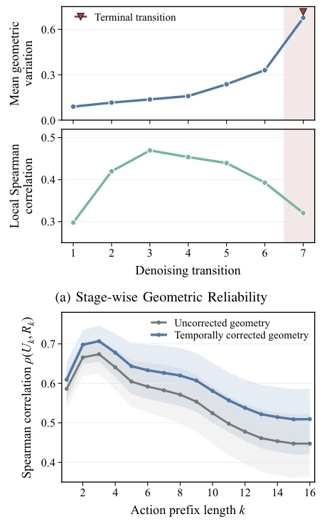
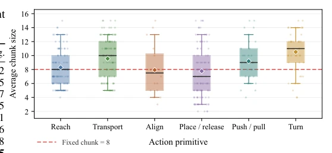
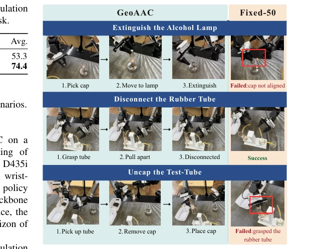

This paper effectively cures the "one-size-fits-all" chronic issue of "Action Chunking" in VLA. Most VLA strategies [5], [6] still run with a fixed horizon rigidly, akin to asking a sprinter to run a full marathon, inevitably failing at the fine manipulation stage. The authors did not pursue complex additional training, but instead mined insights from Flow Matching's "denoising trajectory geometry", discovering that velocity field changes can reflect prediction reliability. This "training-free adaptive" approach is highly effective, boosting real-world success rates directly by 21 percentage points. However, the paper does not explicitly analyze the inference overhead brought by extra geometric calculations, as calculating extra geometric features always takes time. In short, using geometric features to replace entropy estimation is a smart path, at least more reliable than blind sampling, proving that process information is more trustworthy than result information.
Existing VLA strategies [5], [6] generally adopt a fixed action horizon, yet this overlooks the differing requirements for continuity and feedback across various task stages. Figure 1 demonstrates that fixed horizons exhibit distinct performances in search, grasp, and pull stages; long horizons lead to open-loop loss of control, whereas short horizons disrupt continuity. Existing adaptive methods [20], [22] predominantly rely on output-level uncertainty (such as entropy) or necessitate additional training. However, robot action distributions are frequently multimodal; output differences may arise from valid mode diversity rather than prediction unreliability, rendering entropy estimation ineffective. Consequently, process-level signals are required to more precisely characterize prediction reliability, enabling horizon adaptation without additional training to balance open-loop continuity and closed-loop feedback.

Fig. 1: Stage-dependent action horizon requirements. A representative OpenDrawer rollout in RoboCasa. Fixed-2 misidentifies the table edge as the handle during search; Fixed-12 localizes the handle but fails during subsequent grasping and pulling; Fixed-16 executes a long open-loop segment while approaching the handle and ultimately misses the grasp. GeoAAC instead adjusts its action horizon as the rollout progresses.
GeoAAC generates actions based on Flow Matching, leveraging the velocity field prediction $v_ heta$ during the denoising process. The core involves constructing a "prefix geometric profile": first, calculating the local geometric changes (velocity difference norm) of denoising trajectories for different action prefixes $A_{1:k}$, which is found to be positively correlated with prediction uncertainty. Since geometric reliability varies across different denoising stages, time weights $w_t$ are introduced to correct intermediate stage contributions and suppress late-stage noise. This aggregates to form the horizon-wise geometric profile $ ilde{U}$. Next, the relative geometric growth $r_k$ of adjacent prefixes is calculated, retaining only positive values and accumulating them. The execution boundary is selected at the cumulative distribution median (50%); if no non-positive growth exists, the maximum horizon is chosen. If the boundary falls between two steps, linear interpolation is applied. Finally, a motion-aware lower bound $k_{motion}$ is added to prevent frequent replanning for overly short actions. The entire process requires only a single generation without fine-tuning, utilizing geometric features to dynamically adjust the execution boundary, balancing computational efficiency and adaptability.

Fig. 2: Overview of GeoAAC. GeoAAC uses the geometry of Flow Matching denoising trajectories to characterize the reliability of different action prefixes and adapt the action horizon accordingly.

Fig. 3: Correlation between prefix-wise denoising ge- ometry and reference predictive uncertainty. Prefix-wise denoising geometry remains positively correlated with ref- erence predictive uncertainty across action prefix lengths. Shaded regions denote 95% confidence intervals, and the red dashed line indicates ρ = 0.5 for reference.

Fig. 4: Temporal correction of denoising geometry. (a) Local geometric variation increases toward late denoising stages, while its correlation with reference uncertainty de- creases. (b) Temporal correction improves the correlation with reference uncertainty across action prefixes. Shaded regions denote 95% confidence intervals.
Evaluated on GR00T N1.5 and π0.5, covering LIBERO, RoboCasa365, and real-world tasks. Compared against fixed horizon and adaptive baselines such as MS [20], SA [22]. In simulation, GeoAAC improved RoboCasa365 by 8.7% and LIBERO by 5.3%. On real-world three tasks (light off, tube pull, cap open), the average success rate increased from 53.3% to 74.4%. Figure 5 demonstrates its ability to adaptively adjust based on action primitives (e.g., Align short, Transport long). Results demonstrate that geometric features are more robust than entropy, with no training cost. It also performs better under position perturbation, indicating strong generalization.

Fig. 5: Adaptive action horizon selection across action primitives. Each point denotes the average action horizon of one action primitive within an episode, and the dashed line marks fixed-8, the best fixed-action-horizon baseline. Different action primitives exhibit distinct action-horizon preferences: continuous motions favor longer horizons, while goal-proximal alignment and placement favor shorter hori- zons.

Fig. 6: Real-world manipulation experiments. GeoAAC and Fixed-50 are evaluated on alcohol lamp extinguishing, rubber tube disconnection, and test-tube uncapping. Fixed- 50 fails due to cap misalignment in the first task and incorrect object grasping in the third task, while successfully completing rubber tube disconnection.